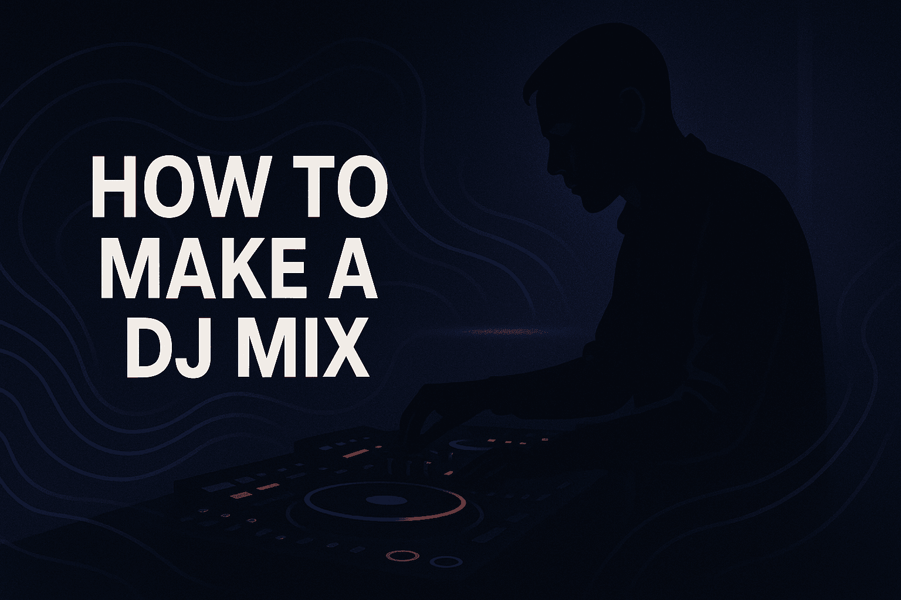
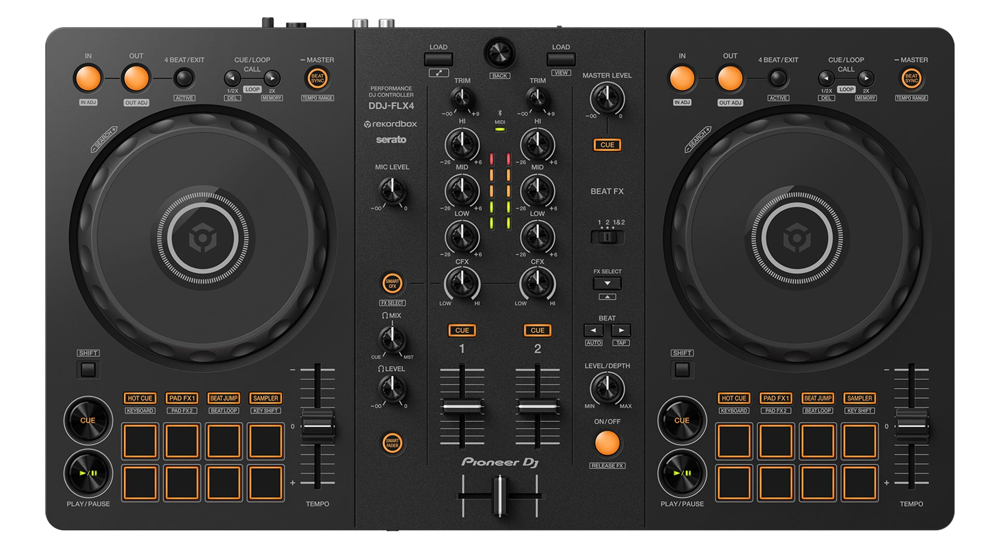
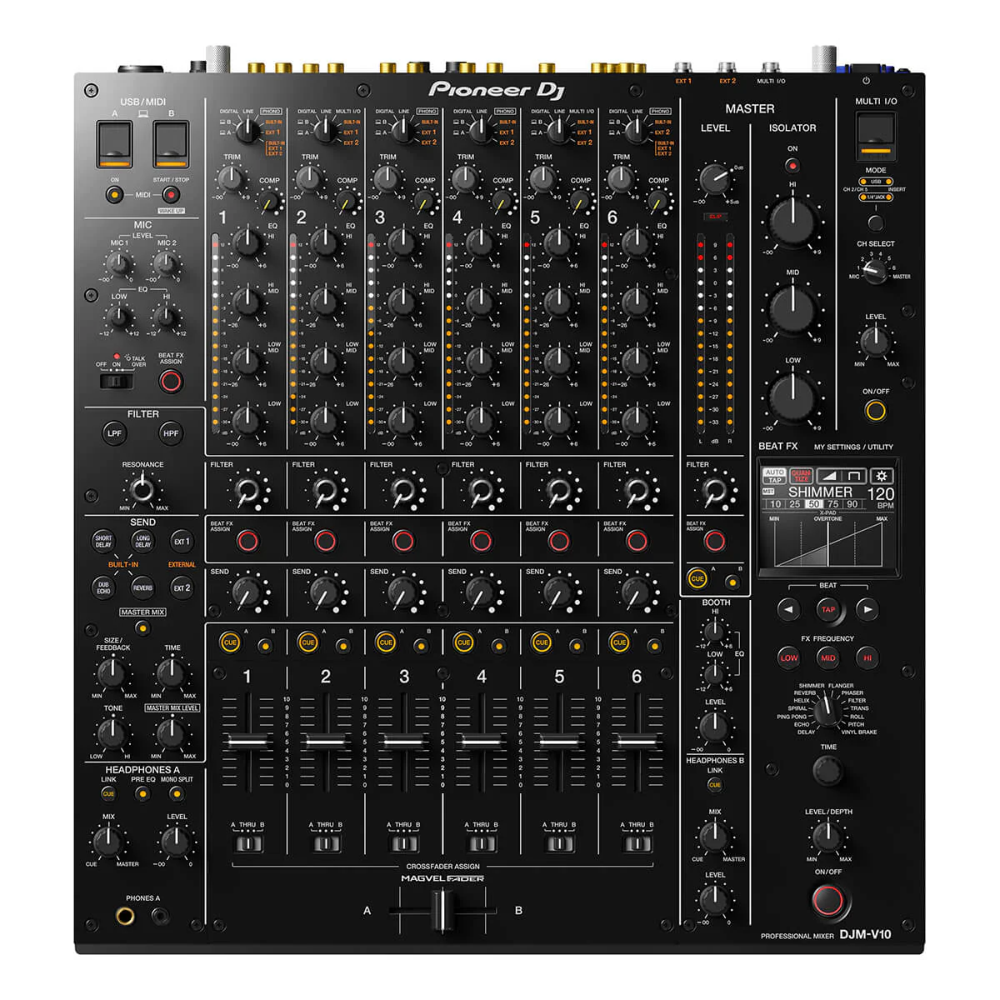
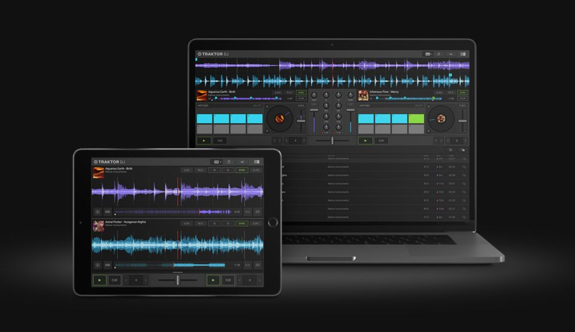
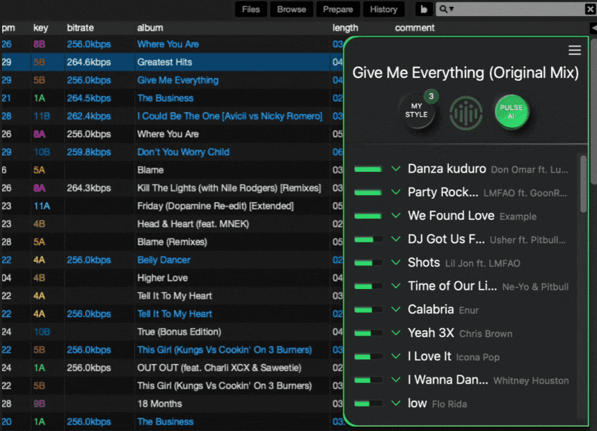
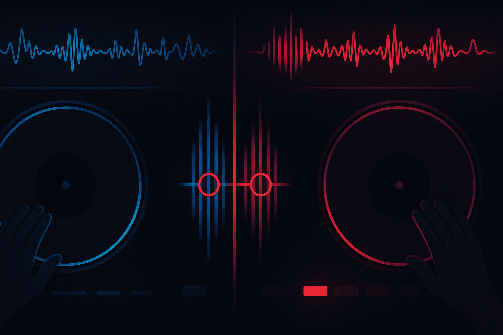
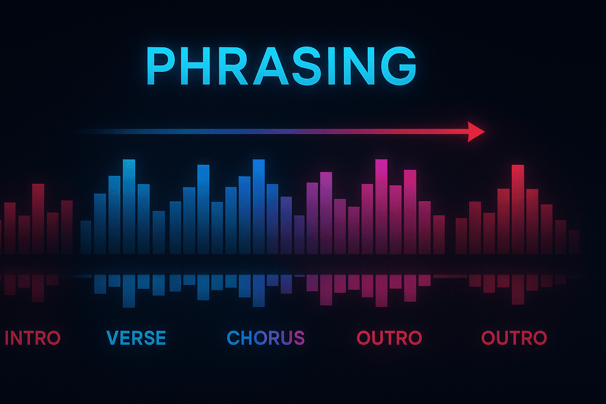
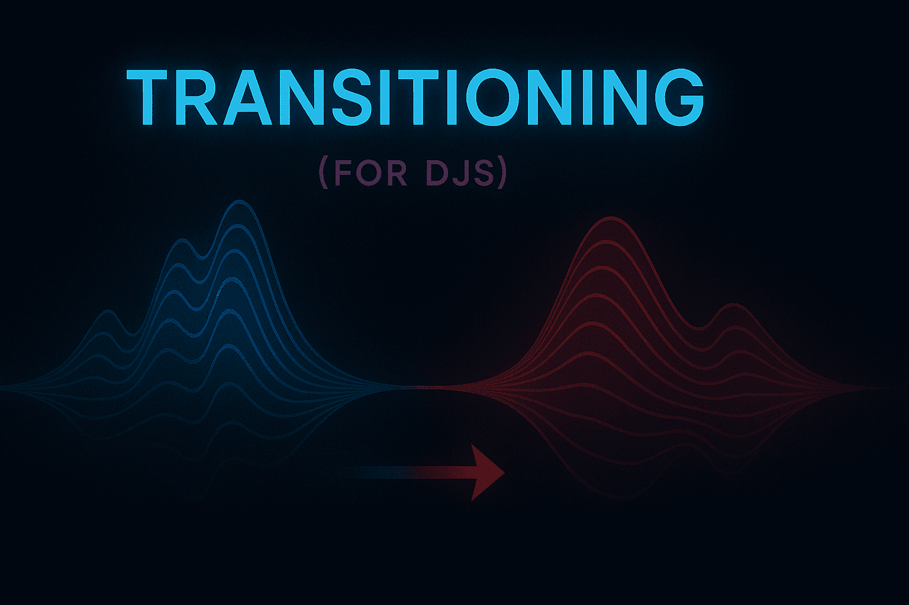
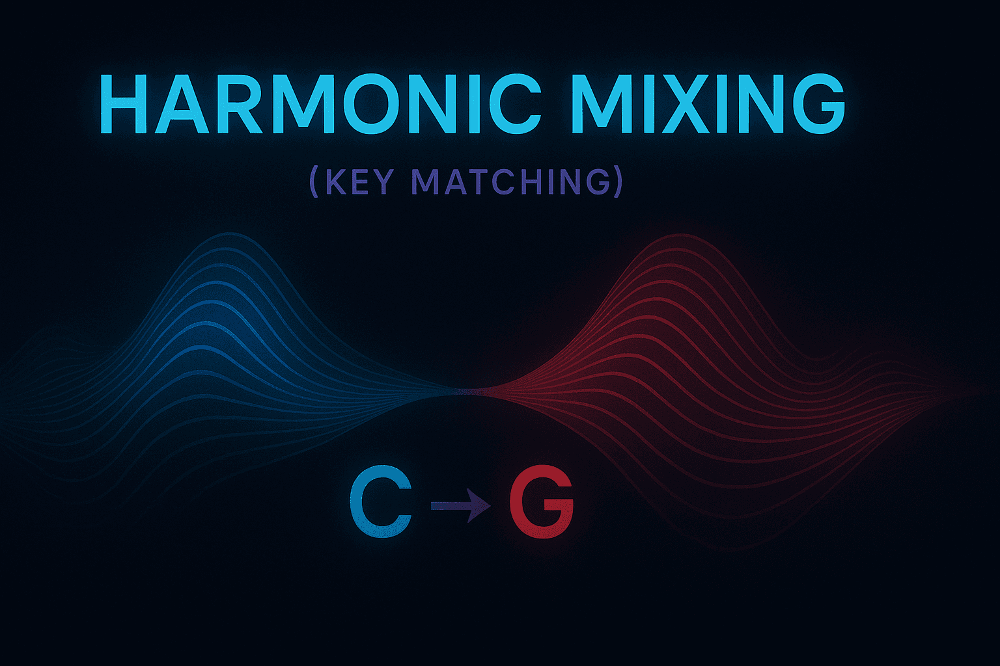
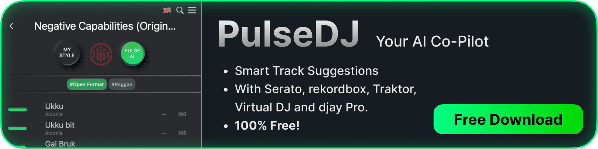

Basics

Crafting your first seamless DJ mix is a rite of passage for every new DJ, transforming you from someone who just plays music into a true artist. I've spent over half my life making DJ mixes, and through trial and error, I've learned the best processes to follow!
In this guide, I'll share all the important considerations and methods to help you make some great DJ mixes!
If you're looking for software - check out my guide on The Best Beginner DJ Software!
What You’ll Learn - How To Make DJ Mixes:
- The essential DJ equipment and software you need to start making DJ mixes.
- Core DJing skills for mix creation, from beatmatching to phrasing and EQing.
- A step-by-step process to plan, record, and share your final mix.
- How PulseDJ can help you select the perfect tracks for a flawless set.
What is a DJ Mix? (And Why You Should Make One)
Before we dive into the "how," let's clarify the "what." A DJ mix isn't just a playlist. A playlist is a sequence of songs; a DJ mix is a performance . It's the art of blending multiple audio tracks together seamlessly, creating a continuous journey of music. The goal is to make the transitions between songs so smooth that the listener barely notices a new song has begun, all while building and releasing energy.
This art form has a rich history. Pioneers like DJ Francis Grasso at New York's Sanctuary club are credited with being among the first to popularize beatmatching, the very technique we'll be discussing. He transformed the DJ from a simple record-spinner into a performer. Today, from underground clubs to massive festivals to professional radio DJs, this continuous flow of music is the standard.
So, why should you learn how to make a DJ mix ?
- To Showcase Your Skill: A well-crafted mix is your resume. It's the single best way to demonstrate your taste, technical djing skills, and ability to program a set.
- To Share Your Passion: It’s a way to package your unique sound and share it with the world, whether with friends, the online DJ community, or potential promoters.
- To Get Gigs: Sending a promoter a link to your latest mix is infinitely more effective than just saying, "I'm a DJ."
The Essential Toolkit: Your DJ Equipment
First things first: you need the right gear. Don't worry, you don't need to spend a fortune to start djing. The core of any setup, from a beginner's bedroom to a festival mainstage, consists of two (or more) players and one mixer.
Decks (The Players)

This is what you use to play music. You have a few main choices:
- Turntables: The classic. Used for playing vinyl records. They offer a fantastic tactile feel but have a steep learning curve.
- CDJs/Media Players: The industry standard in clubs. They play digital files from USB sticks or SD cards.
- The DJ Controller: This is what I recommend for 99% of beginner DJs. A DJ controller combines decks (in the form of jog wheels) and a DJ mixer into one single unit. It connects to your laptop and controls your DJ software. It's the most affordable, portable, and feature-packed way to get started.
The DJ Mixer

The DJ mixer is the heart of your setup. It's where you blend the sound from your two tracks (or more). The key components you'll use are:
- Channel Faders: These are the vertical sliders that control the individual volume of each track.
- Crossfader: This horizontal slider allows you to cut or fade between your decks.
- EQs (Equalizers): These knobs (usually Low, Mid, High) let you control the frequencies of your music, which is crucial for smooth blending.
- Gain/Trim Knobs: These set the base volume levels for your tracks before you mix them, ensuring they're at a similar loudness. We'll call these part of your main volume controls.
DJ Software: The Brains of the Operation

If you're using a DJ controller, your DJ software is the brain. This is the program on your computer that analyzes your music, displays the waveforms, and lets you manage your library. The "big four" are:
- Serato DJ Pro
- Rekordbox
- Virtual DJ
- Traktor
Many controllers come with introductory or "lite" versions of this software, giving you free software to start mixing right away. There are even some great free options available if you're on a tight budget.
Check out my review of The Best Free DJ Software!
I also recomend looking into DJ Auto Mixing Software!
Other Must-Haves
- Headphones: You absolutely cannot DJ without a good pair of headphones. This is how you listen to the next track you want to mix in (this is called "cueing") before the crowd hears it.
- Speakers (Monitors): You need to hear what your mix actually sounds like in the room.
- Cables: The boring but necessary connectors to hook everything up.
Your headphones, software, and controller are the most essential DJ tools in your new kit.
Building Your Arsenal: The Music Library

You can't be a DJ without music. Building a high-quality, well-organized music library is an ongoing process that defines your unique sound. Your songs are your ammunition.
Check out my guide on How To Build a DJ Music Library.
Where do you get your tracks?
- DJ Pools: These are subscription services (like BPM Supreme, DJCity, etc.) where you can download a huge variety of music, often with "DJ-friendly" intros and outros. This is my preferred method for building a collection quickly.
- Digital Stores: Sites like Beatport, Bandcamp, and Traxsource are perfect for finding specific tracks and supporting artists directly. If you're also a music producer, this is where you'd buy new music to study and play alongside your own music.
- Streaming Services: Modern djing has integrated streaming. Some DJ software now works with services like TIDAL, Beatport Link, and Beatsource. PulseDJ, for instance, can work with streamed tracks as long as your DJ software writes them to its history file1.
A quick note: You generally can't use consumer streaming services like Spotify or Apple Music for DJing. The files are protected, and the services don't integrate with pro DJ software.
Once you have your music, organize it . Use your software to create crates and playlists. Analyze your files to get accurate BPM (Beats Per Minute) and Key information. A messy library is a DJ's worst nightmare, especially during a live set.
The Core DJing Skills You Must Master
Okay, you've got your gear and your music. Now for the fun part. This is the key part of learning how to make a DJ mix. These are the fundamental skills you need to practice until they become second nature.
Beatmatching: The Foundation of Mixing

Beatmatching is the art of matching the tempo (the speed) of two tracks so their beats play in perfect time. When two tracks are at the same tempo (or same speed), you can blend them together without them sounding like a clattering, messy trainwreck.
- Find the BPM: Your DJ software will analyze this for you. Let's say Track A is 125 BPM and Track B is 128 BPM.
- Adjust the Tempo: While Track A is playing for the crowd, you use your headphones to listen to Track B. You'll use the "pitch fader" on Deck B to slow it down to 125 BPM.
- Align the Beats: This is the tricky part. You'll nudge the jog wheel on Deck B to get its kick drum to land at the exact same time as Track A's kick drum.
A note on "Sync": Most modern DJ software has a "Sync" button. This fantastic tool will automatically match the BPMs and align the beats for you. While it's great for beginners and allows you to focus on other things, I implore you to learn manual beatmatching. Why? Because technology fails. And more importantly, learning to listen and match beats by ear is an essential skill that trains your brain and ears, making you a much better, more versatile DJ.
Phrasing & Song Structure: The Art of Timing

This, in my opinion, is even more important than beatmatching. You can't just slam one song into the next at any random point. A song isn't just one long loop; it has a song structure.
Most dance music is built in blocks of 4 beats (a "bar") and 16 or 32-beat sections (a "phrase"). You'll hear intros, verses, choruses, breakdowns, and outros. You'll also find purely instrumental sections which are perfect for mixing.
The "art" of phrasing is starting your next track at the right moment, so its structure aligns with the track that's already playing. For example, you typically want to mix the intro of Track B over the outro of Track A. When you line up these phrases, the breakdown of one track might happen just as the chorus of the other hits, creating a new, exciting moment in your mix. This is what makes a great mix feel like a journey rather than just a list of songs.
EQing & Blending: Creating the Seamless Transition

Now that your two tracks are at the same tempo and lined up perfectly, it's time to blend them. If you just slam the fader across, it will sound jarring. The secret is the EQ.
Think of it this way: you can't have two basslines playing at the same time. It sounds muddy and awful. The classic DJ transition works like this:
- Track A is playing: Its channel fader is up, and its EQs (Low, Mid, High) are all at the 12 o'clock position (neutral).
- Start Track B: As you start your beatmatched Track B, you bring up its channel fader, but you turn its Low (bass) EQ knob all the way down.
- The Swap: Now, both tracks are playing, but only Track A has bass. As you get ready to transition, you slowly swap the basslines . You turn Track A's Low EQ down while simultaneously turning Track B's Low EQ up to 12 o'clock.
- Finish the Blend: Once the bass is swapped, you can slowly turn down the Mid and High EQs of Track A and fade it out, leaving Track B to play on its own.
You can also use filters (like a low pass or high pass filter) to create smoother, more creative blends. Mastering your EQs and volume control is what gives your mix that polished, professional sound.
Harmonic Mixing (Mixing in Key)

This is a slightly more advanced technique, but it's what separates the good from the great. Basic music theory (don't worry, it's easy!) tells us that some musical keys sound good together, and some clash horribly.
DJ software analyzes the key of every track (often using the "Camelot" system, e.g., "8A" or "5B"). By mixing tracks that are in the same or a compatible key, your transitions will sound incredibly smooth and "musical." This is what we call harmonic mixing. It's not a hard rule, but when you nail it, your mixes sound incredibly professional.
Step-by-Step: How to Make a DJ Mix (The Process)
You've got the gear and you've practiced the skills. Now it's time to put it all together and create your first mix.
Step 1: Plan Your Mix
Don't just hit record and hope for the best. A great DJ mix is planned.
- Define Your Goal: What is this mix for? Is it a high-energy promo mix for a club? A chilled-out set for house parties? A deep dive into a specific genre?
- Choose a Theme: Sticking to the same genre (or a few compatible ones) is a good idea for your first mix.
- Select Your Tracks: This is the most important step. Gather a pool of 20-30 tracks you love that fit your theme.
- Arrange Your Tracks: Lay them out in your DJ software in a rough order. Think about energy. You generally want to start slow, build to a peak, and then maybe ease it back down. Create an arc.
Step 2: Practice Your Transitions
Now that you have your tracklist, practice every single DJ transition.
- Load Track A and Track B.
- Find the cue points (the exact spots where you'll start and end your mixing). You can save these using hot cues.
- Practice the beatmatch.
- Practice the EQ blend.
- Listen back. Does it work? Does it sound good?
- Repeat for every single transition in your mix.
This is the "homework" part of DJing, and it's what aspiring DJs often skip. Don't. A practiced transition is a perfect transition.
Step 3: Record Your Mix
It's time. Most DJ software has a built-in record function.
- Set Your Levels: Before you start, check your master volume levels. You want the signal to be strong, but never hitting the red. "Redlining" (clipping) will distort your recording and sound terrible.
- Hit Record: Take a deep breath and start with your first track.
- Perform Your Mix: Focus on executing the transitions you practiced. Move from one track to the next track smoothly.
- Don't Stop for Mistakes: If you have a minor wobble in a mix, just keep going. Stopping and restarting will kill your flow. You can always edit it later or, better yet, just live with it. Perfection is the enemy of progress.
Congratulations, you've recorded your first mix!
Step 4: Edit & Master (Optional)
This step moves into the realm of advanced skills and is especially useful if you're a music producer. You can export your recorded mix and import it into a DAW (Digital Audio Workstation) like Ableton Live.
Here, you can:
- Make fine adjustments to volume levels throughout the mix.
- Clean up any major mistakes (though purists will tell you to re-record!).
- Apply light compression or limiting to make the whole mix sound louder and more "glued together."
This isn't essential for your first mix, but it's a good skill to learn down the line.
Step 5: Share Your Mix
You've done it. Now it's time to share your audio tracks with the world.
- Export: Export your final mix as a high-quality MP3 (320kbps) or WAV file.
- Upload: Platforms like Mixcloud and SoundCloud are built for hosting long-form mixes. Mixcloud is generally safer for copyright, as it has licenses with rights holders.
- A Warning on YouTube: Be very careful uploading mixes with copyrighted music to YouTube. They will often be taken down or "claimed," which can mute your audio.
- Share: Post your mix to your social media, send it to friends, and share it with the online DJ community for feedback.
Essential DJ Mix Techniques at a Glance
Technique
What It Is
Why It's Important
Beatmatching
Adjusting two tracks to the same tempo and aligning their beats.
Creates a seamless, in-time blend instead of a "trainwreck."
Phrasing
Aligning the song structure (intros, verses, phrases) of two tracks.
Makes transitions feel natural and musical; creates energy.
Using Low, Mid, and High knobs to blend frequencies.
Prevents muddy sound (e.g., clashing basslines) and creates space.
Harmonic Mixing
Mixing tracks that are in the same or compatible musical keys.
Ensures transitions sound smooth and pleasing to the ear.
Gain Staging
Setting the correct input volume level for each track before mixing.
Prevents distortion (clipping) and keeps a consistent volume.
What About a Video Mix?
Above, is one of my own video DJ mixes from a couple of years ago!
In today's visual world, many DJs are recording video mixes. You've seen them on YouTube - the "Boiler Room" style overhead shot or the head-on view of the DJ working the decks.
Recording a video mix adds another layer of complexity. You'll need:
- A decent camera (even a smartphone works to start).
- Good lighting (so people can see you).
- Software like OBS (Open Broadcaster Software) to capture your DJ software's screen, your camera feed, and the audio all at once.
It's a great way to build a brand, but I'd recommend focusing on nailing your audio-only mixes first.
From Recorded Mix to Live DJ Set: What's Different?
Everything we've covered is the foundation for performing live. But a pre-planned, recorded DJ set is very different from a live one.
When DJs perform live, the biggest factor is the crowd. You can't just stick to your pre-planned list if it's not working. The real skill of a great DJ is "reading the room." It's about looking up, seeing how people are reacting, and knowing what next song to play to keep the energy up.
This is where all your practice and library organization pay off. You need to be able to find the right new track instantly . This is something many DJs struggle with early on. You're trying to beatmatch, EQ, and think about what to play three songs from now . It's a lot to juggle.
This is also where creative tools can be a massive help.
Finding the Perfect Next Track with PulseDJ

As I've gotten more experienced, I've learned to rely on my library and my instincts. But I've also embraced great tools that help me discover new combinations. This is where PulseDJ comes in.
PulseDJ is a companion tool that runs alongside your main DJ software. As you mix music, it analyzes what you're playing and gives you intelligent suggestions for the next track.
It's not about replacing your skill; it's about enhancing it. I use it in two main ways:
- Discovering New Music: The PulseDJ HOT 100 feature is incredible for finding new music that's actually working on dancefloors, not just what's on a chart. You can even filter by country to see what's trending locally.
- Getting Un-Stuck: We all have "blank" moments. PulseDJ's "MyStyle" feature learns from your entire play history to suggest tracks you might have forgotten about that would work perfectly. Best of all, it even highlights suggestions in green that are a perfect harmonic match for the track you're currently playing, making mixing in key effortless.
Start Mixing Your First DJ Set with Confidence
Learning how to make a DJ mix is a journey. It's one of the most rewarding parts of being a DJ. I still remember the first time I nailed a long, smooth blend - the feeling is unbeatable.
We've covered a lot: the DJ equipment you need, the core djing skills to practice, and the step-by-step process to record and share your mix. Don't be intimidated. We all start somewhere. The fact that you're here reading this shows you love music and are on the right path.
It takes practice, patience, and the right guidance. But every time you start mixing, you'll get a little bit better. The more a DJ plays music and mixes, the better their skills become!
And when you're ready to take the guesswork out of your track selection and discover combinations you never thought of, I highly recommend you download the free app from PulseDJ.com . It's a fantastic tool that runs right alongside Serato, Rekordbox, Virtual DJ8, and more, helping you find the perfect next song and elevate your DJ mixing to the next level.
Now go practice, and have fun.
‹ Harmonic Mixing for DJs: From Theory to Perfect Flow